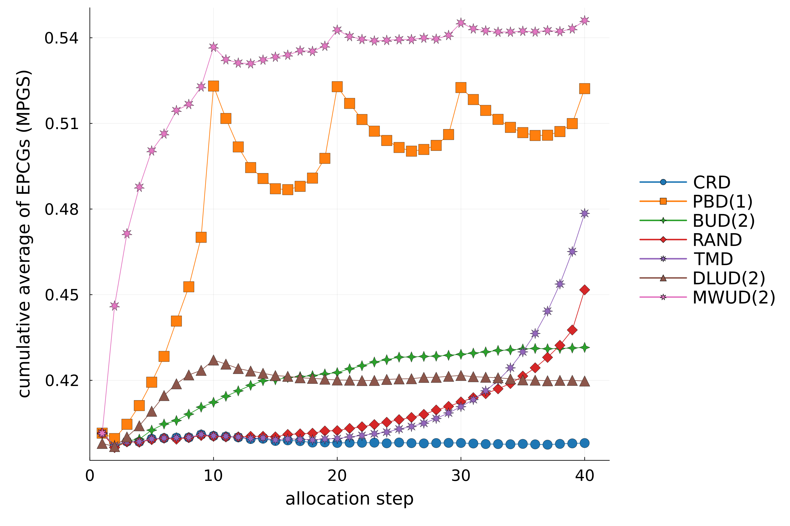

Simulation example 2
Simulation setup
Here, we simulate several randomization procedures, targeting 4:3:2:1 allocation.
The following procedures will be simulated:
DLUD(a=2), and MWUD(\alpha=2)
- Comletele Randomized Design (
CRD). - Permuted Block Design with a block size equal to 2 (
PBD(1)). - Block Urn Design with parameter $\lambda=2$ (
BUD(2)). - Random Allocation Rule (
RAND). - Truncated Multinomial Design (
TMD). - Drop-the-Loser Urn Design with $a=2$ (
DLUD(a=2). - Mass Weighted Urn Design with $\alpha=2$ (
MWUD(2)).
We set sample size $n=40$ and perform $10,000$ simulations.
Simulation run
using Incertus
# sample size
nsbj = 40;
# number of simulations
nsim = 10000;
# target allocation
w = [4, 3, 2, 1];
# randomization procedures to be simulated
rnd = [CRD(w), PBD(w, 1), BUD(w, 2), RAND(w, nsbj), TMD(w, nsbj), DLUD(w, 2), MWUD(w, 2)];
# simulation run
sr = simulate(rnd, nsbj, nsim);
# ========== Calculating operational characteristics ==========
# calculating final imbalance, given simulations' output (`sr`)
final_imb = calc_final_imb(sr);
# calculating expected absolute imbalance vs. allocation step, given simulations' output (`sr`)
expected_abs_imb = calc_expected_abs_imb(sr);
# calculating variance of imbalance vs. allocation step, given simulations' output (`sr`)
variance_of_imb = calc_variance_of_imb(sr);
# calculating expected maximum imbalances over first allocation steps, given simulations' output (`sr`)
expected_max_abs_imb = calc_expected_max_abs_imb(sr);
# calculating cumulative average losses over first allocation steps, given simulations' output (`sr`)
cummean_loss = calc_cummean_loss(sr);
# cumulative average of expected proportions of correct guesses over first allocation steps under the convergence guessing strategy,
# given simulations' output (`sr`)
cummean_epcg_c = calc_cummean_epcg(sr, "C");
# cumulative average of expected proportions of correct guesses over first allocation steps under the maximum probability guessing strategy,
# given simulations' output (`sr`)
cummean_epcg_mp = calc_cummean_epcg(sr, "MP");
# cumulative average of expected proportions of deterministic assignments over first alocation steps, given simulations' output (`sr`)
cummean_pda = calc_cummean_pda(sr);
# calculating forcing index vs. allocation step, given simulations' output (`sr`)
fi = calc_fi(sr);
# Evaluating balance-randomness tradeoff vs. allocation step
brt = calc_brt(sr);
# evaluating allocation ratio preserving (ARP) property
arp = eval_arp(sr);
# ========== Visualizing results ==========
# making a violin plot of final imbalances
violin(final_imb)
# making a plot of the expected absolute imbalances
plot(expected_abs_imb, ylabel = "ecpexted absolute imbalance")
# making a plot of the variances of imbalance
plot(variance_of_imb, ylabel = "variance of imbalance")
# making a plot of expected maximum absolute imbalances over first allocation steps
plot(expected_max_abs_imb, ylabel = "expected maximum absolute imbalance")
# making a plot of cumulative average losses over the first allocation steps
plot(cummean_loss, ylabel = "cumulative average loss")
# making a plot of cumulative averages of expected proportions of correct guesses over first allocation steps
# (under the convergence guessing strategy)
plot(cummean_epcg_c, ylabel = "cumulative average of EPCGs (CGS)")
# making a plot of cumulative averages of expected proportions of correct guesses over first allocation steps
# (under the maximum probability guessing strategy)
plot(cummean_epcg_mp, ylabel = "cumulative average of EPCGs (MPGS)")
# making a plot of cumulative averages of expected proportions of deterministic assignments over first alocation steps
plot(cummean_pda, ylabel = "cumulative average of PDAs")
# making a plot of forcing indeces vs. allocation step
plot(fi, ylabel = "forcing index")
# making a plot of forcing indeces vs. allocation step
heatmap(brt)
# making a plot to demonstrate ARP property
plot(arp)
nothing
Progress: 96%|███████████████████████████████████████▎ | ETA: 0:00:00
Progress: 100%|█████████████████████████████████████████| Time: 0:00:00
Progress: 10%|████▏ | ETA: 0:00:01
Progress: 100%|█████████████████████████████████████████| Time: 0:00:00
Progress: 7%|██▊ | ETA: 0:00:01
Progress: 36%|██████████████▊ | ETA: 0:00:00
Progress: 65%|██████████████████████████▋ | ETA: 0:00:00
Progress: 94%|██████████████████████████████████████▌ | ETA: 0:00:00
Progress: 100%|█████████████████████████████████████████| Time: 0:00:00
Progress: 64%|██████████████████████████▎ | ETA: 0:00:00
Progress: 100%|█████████████████████████████████████████| Time: 0:00:00
Progress: 4%|█▋ | ETA: 0:00:02
Progress: 14%|█████▉ | ETA: 0:00:01
Progress: 25%|██████████▏ | ETA: 0:00:01
Progress: 35%|██████████████▍ | ETA: 0:00:01
Progress: 46%|██████████████████▋ | ETA: 0:00:01
Progress: 56%|██████████████████████▊ | ETA: 0:00:01
Progress: 66%|███████████████████████████ | ETA: 0:00:00
Progress: 76%|███████████████████████████████▏ | ETA: 0:00:00
Progress: 86%|███████████████████████████████████▍ | ETA: 0:00:00
Progress: 97%|███████████████████████████████████████▋ | ETA: 0:00:00
Progress: 100%|█████████████████████████████████████████| Time: 0:00:01
simulating MaxEnt(1) needed for evaluating balance-randomness trade-off...
Progress: 0%| | ETA: 0:18:01
Progress: 0%|▏ | ETA: 0:02:48
Progress: 0%|▏ | ETA: 0:01:58
Progress: 1%|▎ | ETA: 0:01:41
Progress: 1%|▎ | ETA: 0:01:34
Progress: 1%|▍ | ETA: 0:01:27
Progress: 1%|▍ | ETA: 0:01:23
Progress: 1%|▌ | ETA: 0:01:20
Progress: 1%|▌ | ETA: 0:01:19
Progress: 2%|▋ | ETA: 0:01:17
Progress: 2%|▋ | ETA: 0:01:15
Progress: 2%|▊ | ETA: 0:01:14
Progress: 2%|▊ | ETA: 0:01:14
Progress: 2%|▉ | ETA: 0:01:13
Progress: 2%|█ | ETA: 0:01:12
Progress: 2%|█ | ETA: 0:01:11
Progress: 3%|█▏ | ETA: 0:01:11
Progress: 3%|█▏ | ETA: 0:01:10
Progress: 3%|█▎ | ETA: 0:01:10
Progress: 3%|█▎ | ETA: 0:01:09
Progress: 3%|█▍ | ETA: 0:01:09
Progress: 3%|█▍ | ETA: 0:01:08
Progress: 4%|█▌ | ETA: 0:01:08
Progress: 4%|█▌ | ETA: 0:01:07
Progress: 4%|█▋ | ETA: 0:01:07
Progress: 4%|█▋ | ETA: 0:01:07
Progress: 4%|█▊ | ETA: 0:01:06
Progress: 4%|█▉ | ETA: 0:01:06
Progress: 5%|█▉ | ETA: 0:01:06
Progress: 5%|██ | ETA: 0:01:06
Progress: 5%|██ | ETA: 0:01:05
Progress: 5%|██▏ | ETA: 0:01:05
Progress: 5%|██▏ | ETA: 0:01:05
Progress: 5%|██▎ | ETA: 0:01:05
Progress: 6%|██▎ | ETA: 0:01:04
Progress: 6%|██▍ | ETA: 0:01:04
Progress: 6%|██▍ | ETA: 0:01:04
Progress: 6%|██▌ | ETA: 0:01:04
Progress: 6%|██▌ | ETA: 0:01:04
Progress: 6%|██▋ | ETA: 0:01:03
Progress: 7%|██▊ | ETA: 0:01:03
Progress: 7%|██▊ | ETA: 0:01:03
Progress: 7%|██▉ | ETA: 0:01:03
Progress: 7%|██▉ | ETA: 0:01:03
Progress: 7%|███ | ETA: 0:01:03
Progress: 7%|███ | ETA: 0:01:02
Progress: 8%|███▏ | ETA: 0:01:02
Progress: 8%|███▏ | ETA: 0:01:02
Progress: 8%|███▎ | ETA: 0:01:02
Progress: 8%|███▎ | ETA: 0:01:02
Progress: 8%|███▍ | ETA: 0:01:02
Progress: 8%|███▍ | ETA: 0:01:01
Progress: 9%|███▌ | ETA: 0:01:01
Progress: 9%|███▋ | ETA: 0:01:01
Progress: 9%|███▋ | ETA: 0:01:01
Progress: 9%|███▊ | ETA: 0:01:01
Progress: 9%|███▊ | ETA: 0:01:01
Progress: 9%|███▉ | ETA: 0:01:01
Progress: 10%|███▉ | ETA: 0:01:00
Progress: 10%|████ | ETA: 0:01:00
Progress: 10%|████ | ETA: 0:01:00
Progress: 10%|████▏ | ETA: 0:01:00
Progress: 10%|████▏ | ETA: 0:01:00
Progress: 10%|████▎ | ETA: 0:01:00
Progress: 10%|████▎ | ETA: 0:01:00
Progress: 11%|████▍ | ETA: 0:00:59
Progress: 11%|████▍ | ETA: 0:00:59
Progress: 11%|████▌ | ETA: 0:00:59
Progress: 11%|████▌ | ETA: 0:00:59
Progress: 11%|████▋ | ETA: 0:00:59
Progress: 11%|████▊ | ETA: 0:00:59
Progress: 12%|████▊ | ETA: 0:00:59
Progress: 12%|████▉ | ETA: 0:00:59
Progress: 12%|████▉ | ETA: 0:00:58
Progress: 12%|█████ | ETA: 0:00:58
Progress: 12%|█████ | ETA: 0:00:58
Progress: 12%|█████▏ | ETA: 0:00:58
Progress: 13%|█████▏ | ETA: 0:00:58
Progress: 13%|█████▎ | ETA: 0:00:58
Progress: 13%|█████▎ | ETA: 0:00:58
Progress: 13%|█████▍ | ETA: 0:00:58
Progress: 13%|█████▍ | ETA: 0:00:57
Progress: 13%|█████▌ | ETA: 0:00:57
Progress: 14%|█████▋ | ETA: 0:00:57
Progress: 14%|█████▋ | ETA: 0:00:57
Progress: 14%|█████▊ | ETA: 0:00:57
Progress: 14%|█████▊ | ETA: 0:00:57
Progress: 14%|█████▉ | ETA: 0:00:57
Progress: 14%|█████▉ | ETA: 0:00:57
Progress: 15%|██████ | ETA: 0:00:56
Progress: 15%|██████ | ETA: 0:00:56
Progress: 15%|██████▏ | ETA: 0:00:56
Progress: 15%|██████▏ | ETA: 0:00:56
Progress: 15%|██████▎ | ETA: 0:00:56
Progress: 15%|██████▎ | ETA: 0:00:56
Progress: 16%|██████▍ | ETA: 0:00:56
Progress: 16%|██████▍ | ETA: 0:00:56
Progress: 16%|██████▌ | ETA: 0:00:55
Progress: 16%|██████▋ | ETA: 0:00:55
Progress: 16%|██████▋ | ETA: 0:00:55
Progress: 16%|██████▊ | ETA: 0:00:55
Progress: 17%|██████▊ | ETA: 0:00:55
Progress: 17%|██████▉ | ETA: 0:00:55
Progress: 17%|██████▉ | ETA: 0:00:55
Progress: 17%|███████ | ETA: 0:00:55
Progress: 17%|███████ | ETA: 0:00:55
Progress: 17%|███████▏ | ETA: 0:00:54
Progress: 17%|███████▏ | ETA: 0:00:54
Progress: 18%|███████▎ | ETA: 0:00:54
Progress: 18%|███████▎ | ETA: 0:00:54
Progress: 18%|███████▍ | ETA: 0:00:54
Progress: 18%|███████▍ | ETA: 0:00:54
Progress: 18%|███████▌ | ETA: 0:00:54
Progress: 18%|███████▋ | ETA: 0:00:54
Progress: 19%|███████▋ | ETA: 0:00:53
Progress: 19%|███████▊ | ETA: 0:00:53
Progress: 19%|███████▊ | ETA: 0:00:53
Progress: 19%|███████▉ | ETA: 0:00:53
Progress: 19%|███████▉ | ETA: 0:00:53
Progress: 19%|████████ | ETA: 0:00:53
Progress: 20%|████████ | ETA: 0:00:53
Progress: 20%|████████▏ | ETA: 0:00:53
Progress: 20%|████████▏ | ETA: 0:00:53
Progress: 20%|████████▎ | ETA: 0:00:52
Progress: 20%|████████▎ | ETA: 0:00:52
Progress: 20%|████████▍ | ETA: 0:00:52
Progress: 21%|████████▌ | ETA: 0:00:52
Progress: 21%|████████▌ | ETA: 0:00:52
Progress: 21%|████████▋ | ETA: 0:00:52
Progress: 21%|████████▋ | ETA: 0:00:52
Progress: 21%|████████▊ | ETA: 0:00:52
Progress: 21%|████████▊ | ETA: 0:00:52
Progress: 22%|████████▉ | ETA: 0:00:51
Progress: 22%|████████▉ | ETA: 0:00:51
Progress: 22%|█████████ | ETA: 0:00:51
Progress: 22%|█████████ | ETA: 0:00:51
Progress: 22%|█████████▏ | ETA: 0:00:51
Progress: 22%|█████████▏ | ETA: 0:00:51
Progress: 23%|█████████▎ | ETA: 0:00:51
Progress: 23%|█████████▎ | ETA: 0:00:51
Progress: 23%|█████████▍ | ETA: 0:00:51
Progress: 23%|█████████▌ | ETA: 0:00:50
Progress: 23%|█████████▌ | ETA: 0:00:50
Progress: 23%|█████████▋ | ETA: 0:00:50
Progress: 24%|█████████▋ | ETA: 0:00:50
Progress: 24%|█████████▊ | ETA: 0:00:50
Progress: 24%|█████████▊ | ETA: 0:00:50
Progress: 24%|█████████▉ | ETA: 0:00:50
Progress: 24%|█████████▉ | ETA: 0:00:50
Progress: 24%|██████████ | ETA: 0:00:50
Progress: 24%|██████████ | ETA: 0:00:49
Progress: 25%|██████████▏ | ETA: 0:00:49
Progress: 25%|██████████▏ | ETA: 0:00:49
Progress: 25%|██████████▎ | ETA: 0:00:49
Progress: 25%|██████████▎ | ETA: 0:00:49
Progress: 25%|██████████▍ | ETA: 0:00:49
Progress: 25%|██████████▌ | ETA: 0:00:49
Progress: 26%|██████████▌ | ETA: 0:00:49
Progress: 26%|██████████▋ | ETA: 0:00:49
Progress: 26%|██████████▋ | ETA: 0:00:48
Progress: 26%|██████████▊ | ETA: 0:00:48
Progress: 26%|██████████▊ | ETA: 0:00:48
Progress: 26%|██████████▉ | ETA: 0:00:48
Progress: 27%|██████████▉ | ETA: 0:00:48
Progress: 27%|███████████ | ETA: 0:00:48
Progress: 27%|███████████ | ETA: 0:00:48
Progress: 27%|███████████▏ | ETA: 0:00:48
Progress: 27%|███████████▏ | ETA: 0:00:48
Progress: 27%|███████████▎ | ETA: 0:00:47
Progress: 28%|███████████▎ | ETA: 0:00:47
Progress: 28%|███████████▍ | ETA: 0:00:47
Progress: 28%|███████████▌ | ETA: 0:00:47
Progress: 28%|███████████▌ | ETA: 0:00:47
Progress: 28%|███████████▋ | ETA: 0:00:47
Progress: 28%|███████████▋ | ETA: 0:00:47
Progress: 29%|███████████▊ | ETA: 0:00:47
Progress: 29%|███████████▊ | ETA: 0:00:47
Progress: 29%|███████████▉ | ETA: 0:00:46
Progress: 29%|███████████▉ | ETA: 0:00:46
Progress: 29%|████████████ | ETA: 0:00:46
Progress: 29%|████████████ | ETA: 0:00:46
Progress: 30%|████████████▏ | ETA: 0:00:46
Progress: 30%|████████████▎ | ETA: 0:00:46
Progress: 30%|████████████▎ | ETA: 0:00:46
Progress: 30%|████████████▍ | ETA: 0:00:46
Progress: 30%|████████████▍ | ETA: 0:00:46
Progress: 30%|████████████▌ | ETA: 0:00:45
Progress: 31%|████████████▌ | ETA: 0:00:45
Progress: 31%|████████████▋ | ETA: 0:00:45
Progress: 31%|████████████▋ | ETA: 0:00:45
Progress: 31%|████████████▊ | ETA: 0:00:45
Progress: 31%|████████████▊ | ETA: 0:00:45
Progress: 31%|████████████▉ | ETA: 0:00:45
Progress: 32%|████████████▉ | ETA: 0:00:45
Progress: 32%|█████████████ | ETA: 0:00:45
Progress: 32%|█████████████ | ETA: 0:00:44
Progress: 32%|█████████████▏ | ETA: 0:00:44
Progress: 32%|█████████████▎ | ETA: 0:00:44
Progress: 32%|█████████████▎ | ETA: 0:00:44
Progress: 32%|█████████████▍ | ETA: 0:00:44
Progress: 33%|█████████████▍ | ETA: 0:00:44
Progress: 33%|█████████████▌ | ETA: 0:00:44
Progress: 33%|█████████████▌ | ETA: 0:00:44
Progress: 33%|█████████████▋ | ETA: 0:00:44
Progress: 33%|█████████████▋ | ETA: 0:00:44
Progress: 33%|█████████████▊ | ETA: 0:00:43
Progress: 34%|█████████████▊ | ETA: 0:00:43
Progress: 34%|█████████████▉ | ETA: 0:00:43
Progress: 34%|█████████████▉ | ETA: 0:00:43
Progress: 34%|██████████████ | ETA: 0:00:43
Progress: 34%|██████████████▏ | ETA: 0:00:43
Progress: 34%|██████████████▏ | ETA: 0:00:43
Progress: 35%|██████████████▎ | ETA: 0:00:43
Progress: 35%|██████████████▎ | ETA: 0:00:43
Progress: 35%|██████████████▍ | ETA: 0:00:42
Progress: 35%|██████████████▍ | ETA: 0:00:42
Progress: 35%|██████████████▌ | ETA: 0:00:42
Progress: 35%|██████████████▌ | ETA: 0:00:42
Progress: 36%|██████████████▋ | ETA: 0:00:42
Progress: 36%|██████████████▋ | ETA: 0:00:42
Progress: 36%|██████████████▊ | ETA: 0:00:42
Progress: 36%|██████████████▊ | ETA: 0:00:42
Progress: 36%|██████████████▉ | ETA: 0:00:42
Progress: 36%|██████████████▉ | ETA: 0:00:41
Progress: 37%|███████████████ | ETA: 0:00:41
Progress: 37%|███████████████▏ | ETA: 0:00:41
Progress: 37%|███████████████▏ | ETA: 0:00:41
Progress: 37%|███████████████▎ | ETA: 0:00:41
Progress: 37%|███████████████▎ | ETA: 0:00:41
Progress: 37%|███████████████▍ | ETA: 0:00:41
Progress: 38%|███████████████▍ | ETA: 0:00:41
Progress: 38%|███████████████▌ | ETA: 0:00:41
Progress: 38%|███████████████▌ | ETA: 0:00:41
Progress: 38%|███████████████▋ | ETA: 0:00:40
Progress: 38%|███████████████▋ | ETA: 0:00:40
Progress: 38%|███████████████▊ | ETA: 0:00:40
Progress: 39%|███████████████▊ | ETA: 0:00:40
Progress: 39%|███████████████▉ | ETA: 0:00:40
Progress: 39%|████████████████ | ETA: 0:00:40
Progress: 39%|████████████████ | ETA: 0:00:40
Progress: 39%|████████████████▏ | ETA: 0:00:40
Progress: 39%|████████████████▏ | ETA: 0:00:40
Progress: 40%|████████████████▎ | ETA: 0:00:39
Progress: 40%|████████████████▎ | ETA: 0:00:39
Progress: 40%|████████████████▍ | ETA: 0:00:39
Progress: 40%|████████████████▍ | ETA: 0:00:39
Progress: 40%|████████████████▌ | ETA: 0:00:39
Progress: 40%|████████████████▌ | ETA: 0:00:39
Progress: 40%|████████████████▋ | ETA: 0:00:39
Progress: 41%|████████████████▋ | ETA: 0:00:39
Progress: 41%|████████████████▊ | ETA: 0:00:39
Progress: 41%|████████████████▊ | ETA: 0:00:38
Progress: 41%|████████████████▉ | ETA: 0:00:38
Progress: 41%|█████████████████ | ETA: 0:00:38
Progress: 41%|█████████████████ | ETA: 0:00:38
Progress: 42%|█████████████████▏ | ETA: 0:00:38
Progress: 42%|█████████████████▏ | ETA: 0:00:38
Progress: 42%|█████████████████▎ | ETA: 0:00:38
Progress: 42%|█████████████████▎ | ETA: 0:00:38
Progress: 42%|█████████████████▍ | ETA: 0:00:38
Progress: 42%|█████████████████▍ | ETA: 0:00:37
Progress: 43%|█████████████████▌ | ETA: 0:00:37
Progress: 43%|█████████████████▌ | ETA: 0:00:37
Progress: 43%|█████████████████▋ | ETA: 0:00:37
Progress: 43%|█████████████████▋ | ETA: 0:00:37
Progress: 43%|█████████████████▊ | ETA: 0:00:37
Progress: 43%|█████████████████▊ | ETA: 0:00:37
Progress: 44%|█████████████████▉ | ETA: 0:00:37
Progress: 44%|██████████████████ | ETA: 0:00:37
Progress: 44%|██████████████████ | ETA: 0:00:37
Progress: 44%|██████████████████▏ | ETA: 0:00:36
Progress: 44%|██████████████████▏ | ETA: 0:00:36
Progress: 44%|██████████████████▎ | ETA: 0:00:36
Progress: 45%|██████████████████▎ | ETA: 0:00:36
Progress: 45%|██████████████████▍ | ETA: 0:00:36
Progress: 45%|██████████████████▍ | ETA: 0:00:36
Progress: 45%|██████████████████▌ | ETA: 0:00:36
Progress: 45%|██████████████████▌ | ETA: 0:00:36
Progress: 45%|██████████████████▋ | ETA: 0:00:36
Progress: 46%|██████████████████▋ | ETA: 0:00:35
Progress: 46%|██████████████████▊ | ETA: 0:00:35
Progress: 46%|██████████████████▉ | ETA: 0:00:35
Progress: 46%|██████████████████▉ | ETA: 0:00:35
Progress: 46%|███████████████████ | ETA: 0:00:35
Progress: 46%|███████████████████ | ETA: 0:00:35
Progress: 47%|███████████████████▏ | ETA: 0:00:35
Progress: 47%|███████████████████▏ | ETA: 0:00:35
Progress: 47%|███████████████████▎ | ETA: 0:00:35
Progress: 47%|███████████████████▎ | ETA: 0:00:34
Progress: 47%|███████████████████▍ | ETA: 0:00:34
Progress: 47%|███████████████████▍ | ETA: 0:00:34
Progress: 48%|███████████████████▌ | ETA: 0:00:34
Progress: 48%|███████████████████▌ | ETA: 0:00:34
Progress: 48%|███████████████████▋ | ETA: 0:00:34
Progress: 48%|███████████████████▋ | ETA: 0:00:34
Progress: 48%|███████████████████▊ | ETA: 0:00:34
Progress: 48%|███████████████████▉ | ETA: 0:00:34
Progress: 48%|███████████████████▉ | ETA: 0:00:34
Progress: 49%|████████████████████ | ETA: 0:00:33
Progress: 49%|████████████████████ | ETA: 0:00:33
Progress: 49%|████████████████████▏ | ETA: 0:00:33
Progress: 49%|████████████████████▏ | ETA: 0:00:33
Progress: 49%|████████████████████▎ | ETA: 0:00:33
Progress: 49%|████████████████████▎ | ETA: 0:00:33
Progress: 50%|████████████████████▍ | ETA: 0:00:33
Progress: 50%|████████████████████▍ | ETA: 0:00:33
Progress: 50%|████████████████████▌ | ETA: 0:00:33
Progress: 50%|████████████████████▌ | ETA: 0:00:32
Progress: 50%|████████████████████▋ | ETA: 0:00:32
Progress: 50%|████████████████████▊ | ETA: 0:00:32
Progress: 51%|████████████████████▊ | ETA: 0:00:32
Progress: 51%|████████████████████▉ | ETA: 0:00:32
Progress: 51%|████████████████████▉ | ETA: 0:00:32
Progress: 51%|█████████████████████ | ETA: 0:00:32
Progress: 51%|█████████████████████ | ETA: 0:00:32
Progress: 51%|█████████████████████▏ | ETA: 0:00:32
Progress: 52%|█████████████████████▏ | ETA: 0:00:32
Progress: 52%|█████████████████████▎ | ETA: 0:00:31
Progress: 52%|█████████████████████▎ | ETA: 0:00:31
Progress: 52%|█████████████████████▍ | ETA: 0:00:31
Progress: 52%|█████████████████████▍ | ETA: 0:00:31
Progress: 52%|█████████████████████▌ | ETA: 0:00:31
Progress: 53%|█████████████████████▌ | ETA: 0:00:31
Progress: 53%|█████████████████████▋ | ETA: 0:00:31
Progress: 53%|█████████████████████▊ | ETA: 0:00:31
Progress: 53%|█████████████████████▊ | ETA: 0:00:31
Progress: 53%|█████████████████████▉ | ETA: 0:00:30
Progress: 53%|█████████████████████▉ | ETA: 0:00:30
Progress: 54%|██████████████████████ | ETA: 0:00:30
Progress: 54%|██████████████████████ | ETA: 0:00:30
Progress: 54%|██████████████████████▏ | ETA: 0:00:30
Progress: 54%|██████████████████████▏ | ETA: 0:00:30
Progress: 54%|██████████████████████▎ | ETA: 0:00:30
Progress: 54%|██████████████████████▎ | ETA: 0:00:30
Progress: 55%|██████████████████████▍ | ETA: 0:00:30
Progress: 55%|██████████████████████▍ | ETA: 0:00:29
Progress: 55%|██████████████████████▌ | ETA: 0:00:29
Progress: 55%|██████████████████████▌ | ETA: 0:00:29
Progress: 55%|██████████████████████▋ | ETA: 0:00:29
Progress: 55%|██████████████████████▊ | ETA: 0:00:29
Progress: 56%|██████████████████████▊ | ETA: 0:00:29
Progress: 56%|██████████████████████▉ | ETA: 0:00:29
Progress: 56%|██████████████████████▉ | ETA: 0:00:29
Progress: 56%|███████████████████████ | ETA: 0:00:29
Progress: 56%|███████████████████████ | ETA: 0:00:29
Progress: 56%|███████████████████████▏ | ETA: 0:00:28
Progress: 56%|███████████████████████▏ | ETA: 0:00:28
Progress: 57%|███████████████████████▎ | ETA: 0:00:28
Progress: 57%|███████████████████████▎ | ETA: 0:00:28
Progress: 57%|███████████████████████▍ | ETA: 0:00:28
Progress: 57%|███████████████████████▍ | ETA: 0:00:28
Progress: 57%|███████████████████████▌ | ETA: 0:00:28
Progress: 57%|███████████████████████▋ | ETA: 0:00:28
Progress: 58%|███████████████████████▋ | ETA: 0:00:28
Progress: 58%|███████████████████████▊ | ETA: 0:00:27
Progress: 58%|███████████████████████▊ | ETA: 0:00:27
Progress: 58%|███████████████████████▉ | ETA: 0:00:27
Progress: 58%|███████████████████████▉ | ETA: 0:00:27
Progress: 58%|████████████████████████ | ETA: 0:00:27
Progress: 59%|████████████████████████ | ETA: 0:00:27
Progress: 59%|████████████████████████▏ | ETA: 0:00:27
Progress: 59%|████████████████████████▏ | ETA: 0:00:27
Progress: 59%|████████████████████████▎ | ETA: 0:00:27
Progress: 59%|████████████████████████▎ | ETA: 0:00:26
Progress: 59%|████████████████████████▍ | ETA: 0:00:26
Progress: 60%|████████████████████████▍ | ETA: 0:00:26
Progress: 60%|████████████████████████▌ | ETA: 0:00:26
Progress: 60%|████████████████████████▋ | ETA: 0:00:26
Progress: 60%|████████████████████████▋ | ETA: 0:00:26
Progress: 60%|████████████████████████▊ | ETA: 0:00:26
Progress: 60%|████████████████████████▊ | ETA: 0:00:26
Progress: 61%|████████████████████████▉ | ETA: 0:00:26
Progress: 61%|████████████████████████▉ | ETA: 0:00:26
Progress: 61%|█████████████████████████ | ETA: 0:00:25
Progress: 61%|█████████████████████████ | ETA: 0:00:25
Progress: 61%|█████████████████████████▏ | ETA: 0:00:25
Progress: 61%|█████████████████████████▏ | ETA: 0:00:25
Progress: 62%|█████████████████████████▎ | ETA: 0:00:25
Progress: 62%|█████████████████████████▎ | ETA: 0:00:25
Progress: 62%|█████████████████████████▍ | ETA: 0:00:25
Progress: 62%|█████████████████████████▌ | ETA: 0:00:25
Progress: 62%|█████████████████████████▌ | ETA: 0:00:25
Progress: 62%|█████████████████████████▋ | ETA: 0:00:24
Progress: 63%|█████████████████████████▋ | ETA: 0:00:24
Progress: 63%|█████████████████████████▊ | ETA: 0:00:24
Progress: 63%|█████████████████████████▊ | ETA: 0:00:24
Progress: 63%|█████████████████████████▉ | ETA: 0:00:24
Progress: 63%|█████████████████████████▉ | ETA: 0:00:24
Progress: 63%|██████████████████████████ | ETA: 0:00:24
Progress: 64%|██████████████████████████ | ETA: 0:00:24
Progress: 64%|██████████████████████████▏ | ETA: 0:00:24
Progress: 64%|██████████████████████████▏ | ETA: 0:00:23
Progress: 64%|██████████████████████████▎ | ETA: 0:00:23
Progress: 64%|██████████████████████████▍ | ETA: 0:00:23
Progress: 64%|██████████████████████████▍ | ETA: 0:00:23
Progress: 65%|██████████████████████████▌ | ETA: 0:00:23
Progress: 65%|██████████████████████████▌ | ETA: 0:00:23
Progress: 65%|██████████████████████████▋ | ETA: 0:00:23
Progress: 65%|██████████████████████████▋ | ETA: 0:00:23
Progress: 65%|██████████████████████████▊ | ETA: 0:00:23
Progress: 65%|██████████████████████████▊ | ETA: 0:00:23
Progress: 65%|██████████████████████████▉ | ETA: 0:00:22
Progress: 66%|██████████████████████████▉ | ETA: 0:00:22
Progress: 66%|███████████████████████████ | ETA: 0:00:22
Progress: 66%|███████████████████████████ | ETA: 0:00:22
Progress: 66%|███████████████████████████▏ | ETA: 0:00:22
Progress: 66%|███████████████████████████▏ | ETA: 0:00:22
Progress: 66%|███████████████████████████▎ | ETA: 0:00:22
Progress: 67%|███████████████████████████▍ | ETA: 0:00:22
Progress: 67%|███████████████████████████▍ | ETA: 0:00:22
Progress: 67%|███████████████████████████▌ | ETA: 0:00:21
Progress: 67%|███████████████████████████▌ | ETA: 0:00:21
Progress: 67%|███████████████████████████▋ | ETA: 0:00:21
Progress: 67%|███████████████████████████▋ | ETA: 0:00:21
Progress: 68%|███████████████████████████▊ | ETA: 0:00:21
Progress: 68%|███████████████████████████▊ | ETA: 0:00:21
Progress: 68%|███████████████████████████▉ | ETA: 0:00:21
Progress: 68%|███████████████████████████▉ | ETA: 0:00:21
Progress: 68%|████████████████████████████ | ETA: 0:00:21
Progress: 68%|████████████████████████████ | ETA: 0:00:21
Progress: 69%|████████████████████████████▏ | ETA: 0:00:20
Progress: 69%|████████████████████████████▎ | ETA: 0:00:20
Progress: 69%|████████████████████████████▎ | ETA: 0:00:20
Progress: 69%|████████████████████████████▍ | ETA: 0:00:20
Progress: 69%|████████████████████████████▍ | ETA: 0:00:20
Progress: 69%|████████████████████████████▌ | ETA: 0:00:20
Progress: 70%|████████████████████████████▌ | ETA: 0:00:20
Progress: 70%|████████████████████████████▋ | ETA: 0:00:20
Progress: 70%|████████████████████████████▋ | ETA: 0:00:20
Progress: 70%|████████████████████████████▊ | ETA: 0:00:19
Progress: 70%|████████████████████████████▊ | ETA: 0:00:19
Progress: 70%|████████████████████████████▉ | ETA: 0:00:19
Progress: 71%|████████████████████████████▉ | ETA: 0:00:19
Progress: 71%|█████████████████████████████ | ETA: 0:00:19
Progress: 71%|█████████████████████████████ | ETA: 0:00:19
Progress: 71%|█████████████████████████████▏ | ETA: 0:00:19
Progress: 71%|█████████████████████████████▎ | ETA: 0:00:19
Progress: 71%|█████████████████████████████▎ | ETA: 0:00:19
Progress: 72%|█████████████████████████████▍ | ETA: 0:00:19
Progress: 72%|█████████████████████████████▍ | ETA: 0:00:18
Progress: 72%|█████████████████████████████▌ | ETA: 0:00:18
Progress: 72%|█████████████████████████████▌ | ETA: 0:00:18
Progress: 72%|█████████████████████████████▋ | ETA: 0:00:18
Progress: 72%|█████████████████████████████▋ | ETA: 0:00:18
Progress: 72%|█████████████████████████████▊ | ETA: 0:00:18
Progress: 73%|█████████████████████████████▊ | ETA: 0:00:18
Progress: 73%|█████████████████████████████▉ | ETA: 0:00:18
Progress: 73%|█████████████████████████████▉ | ETA: 0:00:18
Progress: 73%|██████████████████████████████ | ETA: 0:00:17
Progress: 73%|██████████████████████████████ | ETA: 0:00:17
Progress: 73%|██████████████████████████████▏ | ETA: 0:00:17
Progress: 74%|██████████████████████████████▎ | ETA: 0:00:17
Progress: 74%|██████████████████████████████▎ | ETA: 0:00:17
Progress: 74%|██████████████████████████████▍ | ETA: 0:00:17
Progress: 74%|██████████████████████████████▍ | ETA: 0:00:17
Progress: 74%|██████████████████████████████▌ | ETA: 0:00:17
Progress: 74%|██████████████████████████████▌ | ETA: 0:00:17
Progress: 75%|██████████████████████████████▋ | ETA: 0:00:16
Progress: 75%|██████████████████████████████▋ | ETA: 0:00:16
Progress: 75%|██████████████████████████████▊ | ETA: 0:00:16
Progress: 75%|██████████████████████████████▊ | ETA: 0:00:16
Progress: 75%|██████████████████████████████▉ | ETA: 0:00:16
Progress: 75%|███████████████████████████████ | ETA: 0:00:16
Progress: 76%|███████████████████████████████ | ETA: 0:00:16
Progress: 76%|███████████████████████████████▏ | ETA: 0:00:16
Progress: 76%|███████████████████████████████▏ | ETA: 0:00:16
Progress: 76%|███████████████████████████████▎ | ETA: 0:00:16
Progress: 76%|███████████████████████████████▎ | ETA: 0:00:15
Progress: 76%|███████████████████████████████▍ | ETA: 0:00:15
Progress: 77%|███████████████████████████████▍ | ETA: 0:00:15
Progress: 77%|███████████████████████████████▌ | ETA: 0:00:15
Progress: 77%|███████████████████████████████▌ | ETA: 0:00:15
Progress: 77%|███████████████████████████████▋ | ETA: 0:00:15
Progress: 77%|███████████████████████████████▋ | ETA: 0:00:15
Progress: 77%|███████████████████████████████▊ | ETA: 0:00:15
Progress: 78%|███████████████████████████████▊ | ETA: 0:00:15
Progress: 78%|███████████████████████████████▉ | ETA: 0:00:14
Progress: 78%|████████████████████████████████ | ETA: 0:00:14
Progress: 78%|████████████████████████████████ | ETA: 0:00:14
Progress: 78%|████████████████████████████████▏ | ETA: 0:00:14
Progress: 78%|████████████████████████████████▏ | ETA: 0:00:14
Progress: 79%|████████████████████████████████▎ | ETA: 0:00:14
Progress: 79%|████████████████████████████████▎ | ETA: 0:00:14
Progress: 79%|████████████████████████████████▍ | ETA: 0:00:14
Progress: 79%|████████████████████████████████▍ | ETA: 0:00:14
Progress: 79%|████████████████████████████████▌ | ETA: 0:00:14
Progress: 79%|████████████████████████████████▌ | ETA: 0:00:13
Progress: 80%|████████████████████████████████▋ | ETA: 0:00:13
Progress: 80%|████████████████████████████████▋ | ETA: 0:00:13
Progress: 80%|████████████████████████████████▊ | ETA: 0:00:13
Progress: 80%|████████████████████████████████▉ | ETA: 0:00:13
Progress: 80%|████████████████████████████████▉ | ETA: 0:00:13
Progress: 80%|█████████████████████████████████ | ETA: 0:00:13
Progress: 81%|█████████████████████████████████ | ETA: 0:00:13
Progress: 81%|█████████████████████████████████▏ | ETA: 0:00:13
Progress: 81%|█████████████████████████████████▏ | ETA: 0:00:12
Progress: 81%|█████████████████████████████████▎ | ETA: 0:00:12
Progress: 81%|█████████████████████████████████▎ | ETA: 0:00:12
Progress: 81%|█████████████████████████████████▍ | ETA: 0:00:12
Progress: 82%|█████████████████████████████████▍ | ETA: 0:00:12
Progress: 82%|█████████████████████████████████▌ | ETA: 0:00:12
Progress: 82%|█████████████████████████████████▌ | ETA: 0:00:12
Progress: 82%|█████████████████████████████████▋ | ETA: 0:00:12
Progress: 82%|█████████████████████████████████▋ | ETA: 0:00:12
Progress: 82%|█████████████████████████████████▊ | ETA: 0:00:11
Progress: 82%|█████████████████████████████████▉ | ETA: 0:00:11
Progress: 83%|█████████████████████████████████▉ | ETA: 0:00:11
Progress: 83%|██████████████████████████████████ | ETA: 0:00:11
Progress: 83%|██████████████████████████████████ | ETA: 0:00:11
Progress: 83%|██████████████████████████████████▏ | ETA: 0:00:11
Progress: 83%|██████████████████████████████████▏ | ETA: 0:00:11
Progress: 83%|██████████████████████████████████▎ | ETA: 0:00:11
Progress: 84%|██████████████████████████████████▎ | ETA: 0:00:11
Progress: 84%|██████████████████████████████████▍ | ETA: 0:00:11
Progress: 84%|██████████████████████████████████▍ | ETA: 0:00:10
Progress: 84%|██████████████████████████████████▌ | ETA: 0:00:10
Progress: 84%|██████████████████████████████████▌ | ETA: 0:00:10
Progress: 84%|██████████████████████████████████▋ | ETA: 0:00:10
Progress: 85%|██████████████████████████████████▊ | ETA: 0:00:10
Progress: 85%|██████████████████████████████████▊ | ETA: 0:00:10
Progress: 85%|██████████████████████████████████▉ | ETA: 0:00:10
Progress: 85%|██████████████████████████████████▉ | ETA: 0:00:10
Progress: 85%|███████████████████████████████████ | ETA: 0:00:10
Progress: 85%|███████████████████████████████████ | ETA: 0:00:09
Progress: 86%|███████████████████████████████████▏ | ETA: 0:00:09
Progress: 86%|███████████████████████████████████▏ | ETA: 0:00:09
Progress: 86%|███████████████████████████████████▎ | ETA: 0:00:09
Progress: 86%|███████████████████████████████████▎ | ETA: 0:00:09
Progress: 86%|███████████████████████████████████▍ | ETA: 0:00:09
Progress: 86%|███████████████████████████████████▍ | ETA: 0:00:09
Progress: 87%|███████████████████████████████████▌ | ETA: 0:00:09
Progress: 87%|███████████████████████████████████▌ | ETA: 0:00:09
Progress: 87%|███████████████████████████████████▋ | ETA: 0:00:09
Progress: 87%|███████████████████████████████████▊ | ETA: 0:00:08
Progress: 87%|███████████████████████████████████▊ | ETA: 0:00:08
Progress: 87%|███████████████████████████████████▉ | ETA: 0:00:08
Progress: 88%|███████████████████████████████████▉ | ETA: 0:00:08
Progress: 88%|████████████████████████████████████ | ETA: 0:00:08
Progress: 88%|████████████████████████████████████ | ETA: 0:00:08
Progress: 88%|████████████████████████████████████▏ | ETA: 0:00:08
Progress: 88%|████████████████████████████████████▏ | ETA: 0:00:08
Progress: 88%|████████████████████████████████████▎ | ETA: 0:00:08
Progress: 89%|████████████████████████████████████▎ | ETA: 0:00:07
Progress: 89%|████████████████████████████████████▍ | ETA: 0:00:07
Progress: 89%|████████████████████████████████████▍ | ETA: 0:00:07
Progress: 89%|████████████████████████████████████▌ | ETA: 0:00:07
Progress: 89%|████████████████████████████████████▌ | ETA: 0:00:07
Progress: 89%|████████████████████████████████████▋ | ETA: 0:00:07
Progress: 89%|████████████████████████████████████▊ | ETA: 0:00:07
Progress: 90%|████████████████████████████████████▊ | ETA: 0:00:07
Progress: 90%|████████████████████████████████████▉ | ETA: 0:00:07
Progress: 90%|████████████████████████████████████▉ | ETA: 0:00:07
Progress: 90%|█████████████████████████████████████ | ETA: 0:00:06
Progress: 90%|█████████████████████████████████████ | ETA: 0:00:06
Progress: 90%|█████████████████████████████████████▏ | ETA: 0:00:06
Progress: 91%|█████████████████████████████████████▏ | ETA: 0:00:06
Progress: 91%|█████████████████████████████████████▎ | ETA: 0:00:06
Progress: 91%|█████████████████████████████████████▎ | ETA: 0:00:06
Progress: 91%|█████████████████████████████████████▍ | ETA: 0:00:06
Progress: 91%|█████████████████████████████████████▍ | ETA: 0:00:06
Progress: 91%|█████████████████████████████████████▌ | ETA: 0:00:06
Progress: 92%|█████████████████████████████████████▋ | ETA: 0:00:05
Progress: 92%|█████████████████████████████████████▋ | ETA: 0:00:05
Progress: 92%|█████████████████████████████████████▊ | ETA: 0:00:05
Progress: 92%|█████████████████████████████████████▊ | ETA: 0:00:05
Progress: 92%|█████████████████████████████████████▉ | ETA: 0:00:05
Progress: 92%|█████████████████████████████████████▉ | ETA: 0:00:05
Progress: 93%|██████████████████████████████████████ | ETA: 0:00:05
Progress: 93%|██████████████████████████████████████ | ETA: 0:00:05
Progress: 93%|██████████████████████████████████████▏ | ETA: 0:00:05
Progress: 93%|██████████████████████████████████████▏ | ETA: 0:00:04
Progress: 93%|██████████████████████████████████████▎ | ETA: 0:00:04
Progress: 93%|██████████████████████████████████████▎ | ETA: 0:00:04
Progress: 94%|██████████████████████████████████████▍ | ETA: 0:00:04
Progress: 94%|██████████████████████████████████████▍ | ETA: 0:00:04
Progress: 94%|██████████████████████████████████████▌ | ETA: 0:00:04
Progress: 94%|██████████████████████████████████████▌ | ETA: 0:00:04
Progress: 94%|██████████████████████████████████████▋ | ETA: 0:00:04
Progress: 94%|██████████████████████████████████████▊ | ETA: 0:00:04
Progress: 95%|██████████████████████████████████████▊ | ETA: 0:00:04
Progress: 95%|██████████████████████████████████████▉ | ETA: 0:00:03
Progress: 95%|██████████████████████████████████████▉ | ETA: 0:00:03
Progress: 95%|███████████████████████████████████████ | ETA: 0:00:03
Progress: 95%|███████████████████████████████████████ | ETA: 0:00:03
Progress: 95%|███████████████████████████████████████▏ | ETA: 0:00:03
Progress: 96%|███████████████████████████████████████▏ | ETA: 0:00:03
Progress: 96%|███████████████████████████████████████▎ | ETA: 0:00:03
Progress: 96%|███████████████████████████████████████▎ | ETA: 0:00:03
Progress: 96%|███████████████████████████████████████▍ | ETA: 0:00:03
Progress: 96%|███████████████████████████████████████▍ | ETA: 0:00:02
Progress: 96%|███████████████████████████████████████▌ | ETA: 0:00:02
Progress: 96%|███████████████████████████████████████▌ | ETA: 0:00:02
Progress: 97%|███████████████████████████████████████▋ | ETA: 0:00:02
Progress: 97%|███████████████████████████████████████▊ | ETA: 0:00:02
Progress: 97%|███████████████████████████████████████▊ | ETA: 0:00:02
Progress: 97%|███████████████████████████████████████▉ | ETA: 0:00:02
Progress: 97%|███████████████████████████████████████▉ | ETA: 0:00:02
Progress: 97%|████████████████████████████████████████ | ETA: 0:00:02
Progress: 98%|████████████████████████████████████████ | ETA: 0:00:02
Progress: 98%|████████████████████████████████████████▏| ETA: 0:00:01
Progress: 98%|████████████████████████████████████████▏| ETA: 0:00:01
Progress: 98%|████████████████████████████████████████▎| ETA: 0:00:01
Progress: 98%|████████████████████████████████████████▎| ETA: 0:00:01
Progress: 98%|████████████████████████████████████████▍| ETA: 0:00:01
Progress: 99%|████████████████████████████████████████▍| ETA: 0:00:01
Progress: 99%|████████████████████████████████████████▌| ETA: 0:00:01
Progress: 99%|████████████████████████████████████████▋| ETA: 0:00:01
Progress: 99%|████████████████████████████████████████▋| ETA: 0:00:01
Progress: 99%|████████████████████████████████████████▊| ETA: 0:00:00
Progress: 99%|████████████████████████████████████████▊| ETA: 0:00:00
Progress: 100%|████████████████████████████████████████▉| ETA: 0:00:00
Progress: 100%|████████████████████████████████████████▉| ETA: 0:00:00
Progress: 100%|█████████████████████████████████████████| ETA: 0:00:00
Progress: 100%|█████████████████████████████████████████| Time: 0:01:04Simulation results
A violin plot of the final imbalance after all treatment assignmnets complete
Expected absolute imbalance vs. allocation step
Variance of imbalance vs. allocation step
Expected maximum absolute imbalance over first allocation steps
Cumulative average loss over first allocation steps
Cumulative averages of expected proportions of correct guesses over first allocation steps (under the convergence guessing strategy)
Cumulative averages of expected proportions of correct guesses over first allocation steps (under the maximum probability guessing strategy)
